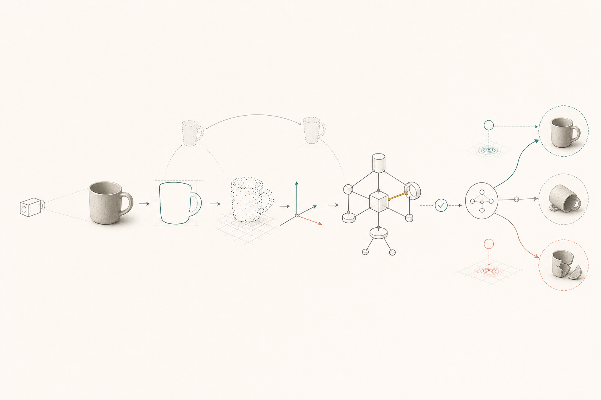
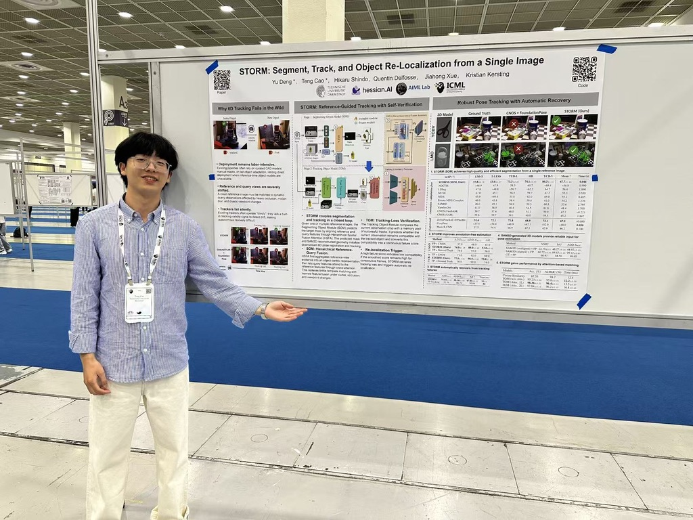

Perception and World Modeling
Segmenting, tracking and reconstructing objects so that an agent can turn visual experience into persistent, structured representations of the world.

Reasoning AI · White-Box Systems
Ph.D. student at hessian.AI and the Artificial Intelligence and Machine Learning Lab, Technische Universität Darmstadt. I build white-box reasoning systems that connect perception, explicit world models and self-correction, with the long-term goal of enabling machines to think more like humans.
About
I am a Ph.D. student at hessian.AI and the Artificial Intelligence and Machine Learning Lab at Technische Universität Darmstadt. My research focuses on reasoning AI: systems that represent what they know explicitly, expose how decisions are made and repair their reasoning when evidence changes.
My long-term goal is to enable machines to think more like humans, not merely by imitating surface language, but by combining perception, structured world models, step-by-step reasoning, verification and continual self-correction.
Research
Segmenting, tracking and reconstructing objects so that an agent can turn visual experience into persistent, structured representations of the world.
Executable knowledge bases, symbolic behavioral models and neuro-symbolic methods that make an agent's beliefs and decisions inspectable.
Agents that ask targeted questions, test their world models and repair incorrect knowledge through evidence-grounded, verifier-guided learning.
Publications
arXiv 2026
Hikaru Shindo*, Yu Deng*, Teng Cao*, Quentin Delfosse, Christopher Tauchmann, Jannis Blüml, Gopika Sudhakaran, Kristian Kersting. arXiv:2606.07127. Equal contribution.
This work introduces ESBM, an explicit symbolic behavioral model that couples policy performance with evidence-grounded question answering and executable world-model prediction for interpretable agents.
arXiv 2026
Teng Cao*, Yu Deng*, Hikaru Shindo*, Quentin Delfosse, Lanxi Wen, Suli Wang, Jannis Blüml, Christopher Tauchmann, Kristian Kersting. arXiv:2605.09487. Equal contribution.
Kintsugi is a white-box policy-learning framework that improves embodied agents by repairing a typed executable knowledge base through verifier-gated edits, with zero LLM calls at inference time.
ICML 2026 (Accepted)
Yu Deng*, Teng Cao*, Hikaru Shindo, Jiahong Xue, Quentin Delfosse, Kristian Kersting. Accepted to ICML 2026. arXiv:2511.09771. Equal contribution.
STORM is an annotation-free real-time 6D pose estimation and tracking system for robust object segmentation, tracking, and re-localization from a single image.

Writing
2026-05-13
Original NocsFM project note, preserved as-is and added into the current notes collection.
2026-04-23
A direct English translation of the original Chinese discussion memo on white-box LLM research directions.
Draft
A long-form draft on a twenty-three-attempt sweep of small transformers on COGS.
CV
Technische Universität Darmstadt. Researching reasoning AI through white-box systems that integrate perception, explicit world models, verification and self-correction.
Technische Universität Darmstadt. Coursework includes reinforcement learning, robot learning, computer vision, statistical machine learning, language technology and deep learning architectures.
Jilin University. Studied deep learning, machine learning, data structures, GPGPU computing, C/C++, software engineering and bioinformatics.
Jilin University. Coursework included macroeconomics, microeconomics, corporate finance and public finance.
Contact